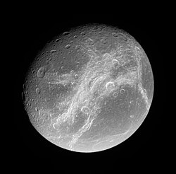

Dione as seen by the Cassini orbiter
Dione is the fourth biggest moon of Saturn.
It was discovered by Giovanni Cassini in 1684 and is named after a Titaness from Greek mythology.
Dione is an icy, heavily cratered world, but features many chasmata and fossae (ridges).
Dione has two trojan moons, which are also moons of Saturn - Helene and Polydeuces.
In 1684, Giovanni Domenico Cassini discovered two moons - Dione and Tethys.
He also made two earlier discoveries at the Paris Observatory - Rhea and Iapetus,
Dione is named after the Titaness from Greek mythology, oracular goddess of Dodona.
Initially, Cassini called the four moons he discovered Sidera Lodoicea ("the stars of Louis") in honour of Louis XIV.
Later, these four, along with Titan, were numbered I through V in order from closest to most distant, and later were updated when Mimas, Enceladus, and Hyperion were discovered.
John Herschel was the first to suggest naming satellites of Saturn after Titans and Giants, since Cronus (Greek analogue of the Roman Saturn) is their leader.
Orbit and rotation
Dione is the 18th most distant satellite of Saturn along with two other smaller ones.
These two - Helene and Polydeuces - are trojans of Dione and orbit around the L4 and L5 points respectively.
The three have semi-major axes of around 377 thousand kilometers and it takes them 2.7 days to complete their orbit around Saturn.
Dione and possibly its trojans are tidally locked to Saturn.
Dione has a nearly circular orbit with a 0.002 eccentricity and no inclination.
It is also in a 1:2 mean-motion resonance with Enceladus.
Dione has a mean diameter of 1122.8 km, making it the fourth largest moon of Saturn.
Based on its density, Dione is made up of nearly equal parts of silicate rocks and water ice.
Dione is thus differentated into a solid rocky core and an icy mantle.
There is a possibility that the lowermost mantle layer is not ice, but instead a liquid water subsurface ocean.

The dark trailing hemisphere of Dione, featuring several chasmata - Palatine and Eurotas (from upper right to lower left), and Padua (right)
The bright surface of Dione is a result of water ice covering it.
However, it is not uniformly white, as its trailing hemisphere is darker on average.
Like most of the moons of Saturn, Dione's surface is old and heavily cratered.
However, the dark trailing hemisphere is marked by a network of chasms, troughs, and ridges.
These icy cliffs were refered to as "wispy terrain" and differ in color from the rest of the hemisphere.
Initially they were thought to be deposits of ice resurfaced from cryovolcanism.
Cassini data managed to disprove those theories, revealing that the linear "wisps" were long ice cliffs created from tectonic activity.
These canyons can reach heights of several meters and lengts of over 1,000 km, like the Palatine, Padua, and Eurotas Chasmata.
The tallest ridge is the Janiculum ridge 1.5 km in height and is also a result from said tectonic fracturing.
Craters on Dione are not spread equally, and some of the more heavily-cratered plains appear on the trailing hemisphere.
For that reason it is possible that impacts have spun the moon, and the formerly leading cratered terrain was sent back.
Craters are also flatter due to the volatile icy crust.
One large crater 350 km in diameter is the multi-ring Evander near the south pole.
A tenuous atmosphere has been detected on the surface of Dione.
It is in the form of an exosphere consisting of mostly molecular oxygen.
Dione has been visited by several missions, first of which was Pioneer 11.
The first to sent back images were the two Voyager probes, revealing the "wispy" terrain for the first time.
In the 21st century, the Cassini orbiter expanded on the previous observations, making five close flybys, the closest of which was 99 km from the surface.
Images revealed that the "wisps" were instead deep canyons.
External links
{% include catnatural-satellites.html %}